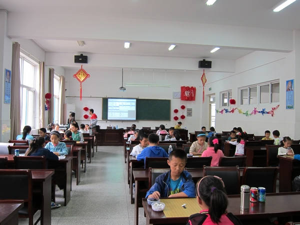
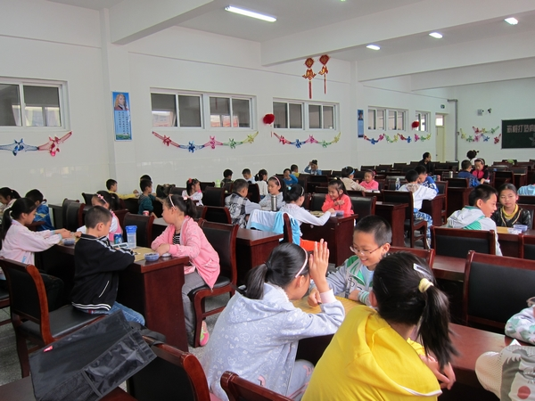

由南通市棋类协会组织的南通市2012年五子棋锦标赛于10月13日在南通市五子棋活动中心举行，共计四十余名选手参加了此次比赛。
最终卢家帅、刘熠蕊分获幼儿组男女冠军，唐世祺、王姚瑶分获儿童组男女冠军，周楠、陈幸分获少年组男女冠军，陈德胜获成人男子组冠军。

［ ^版徒 于 2012-10-13 17:48:40 时花20金币送鲜花一朵］
［ ^版徒 于 2012-10-13 17:48:40 时花20金币送鲜花一朵］
［ ^版徒 于 2012-10-13 17:48:40 时花20金币送鲜花一朵］
［ ^版徒 于 2012-10-13 17:48:40 时花20金币送鲜花一朵］
［ ^版徒 于 2012-10-13 17:48:40 时花20金币送鲜花一朵］
［ ^版徒 于 2012-10-13 17:48:40 时花20金币送鲜花一朵］
［ ^版徒 于 2012-10-13 17:48:40 时花20金币送鲜花一朵］
［ ^版徒 于 2012-10-13 17:48:40 时花20金币送鲜花一朵］
［ ^版徒 于 2012-10-13 17:48:40 时花20金币送鲜花一朵］
［ ^版徒 于 2012-10-13 17:48:40 时花20金币送鲜花一朵］
此次比赛成就我们王姚瑶小朋友的小满贯。
此前她已经取得了
区级比赛冠军：港闸区第六届小学生五子棋冠军
市级比赛亚军：南通市小学生智力运动会亚军、宁波市青少年锦标赛亚军
省级比赛冠军：第九届浙江公开赛冠军
全国比赛冠军：第五届全国少年儿童五子棋锦标赛冠军
只差一个市级比赛冠军，今天圆梦了
［ 陈国良 于 2012-10-13 22:16:26 时花20金币送鲜花一朵］
好像不是教室
引用：会议室。。。
原文由 鱼岛岛主 发表于 2012-10-18 22:50:11 :好像不是教室